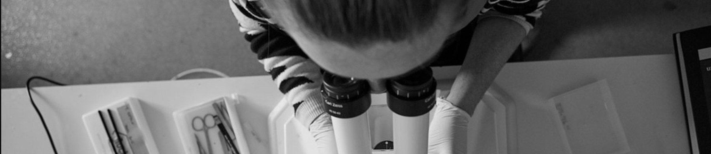

PhD students
Applications go through the Crick PhD programme, not directly to the lab.
Crick PhD recruitment →
We are always interested in hearing from good people, whether or not a position is advertised.
This research programme is interdisciplinary. Realising it means understanding experiment and theory, wet lab and computation, biology and physics. We do not expect everyone to be expert in everything. We do expect everyone to engage across boundaries, to be curious about approaches beyond their own, and to value what different perspectives bring.
The lab works best when we learn from each other: when a computational model sharpens an experimental question, when an unexpected result reframes a theoretical assumption, and when people at different career stages share knowledge generously and support one another’s growth.
You will own your project and be encouraged to give it energy and focus. Asking for help is normal rather than a weakness and the diverse expertise in the lab offers a range of support and advice. Beyond the lab there is the Crick: core facilities and the people who run them, training, and a community of developmental and stem cell groups who meet weekly.
Applications go through the Crick PhD programme, not directly to the lab.
Crick PhD recruitment →Advertised positions appear on the Crick jobs page. Speculative enquiries are welcome: send a CV, a short statement of research interests, and two referees. We also support fellowship applications.
Crick vacancies →Summer placements, Erasmus and visiting scientists. Applications are made through the Crick rather than directly to the lab.
Crick student opportunities →No positions are advertised at present. Speculative enquiries are still welcome.